Pasporty slovenských měst: bez pasportu (nahoře, modře) a s pasportem (dole, červeně)
Řez zleva (A) doprava (B), ±10 m podél ulice, 10 px = 1 m. Silné čáry = okraje vozovky, tenké = ostatní hranice, žlutá = střed řezu, * = odhad. Ortofoto © GKÚ Bratislava, NLC (ZBGIS, CC BY 4.0).
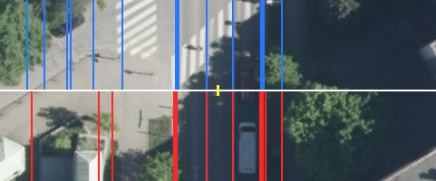
kr1 · Józefa Brodowicza (krakow)
bez mapy: zelen 1.85* · chodnik 2.5* · zelen 0.4* · chodnik 2.5* · stromorad 3.2* · chodnik 6.05* · pruh 3.26 · pruh 2.9 · pruh 3.23 · stromorad 2.19*
s mapou Krakova: chodnik 7.47 · stromorad 1.5 · chodnik 6.83 · pruh 3.53 · pruh 2.9 · pruh 3.08 · chodnik 0.5 · stromorad 1.84*
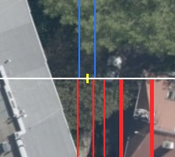
kr2 · (bez názvu) (krakow)
bez mapy: chodnik 2*
s mapou Krakova: chodnik_kola 1.98 · nezname 1.45* · chodnik 2.05 · obsluzna 3.9
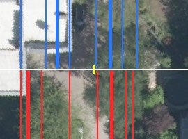
kr3 · Walerego Goetla (krakow)
bez mapy: chodnik 3.64* · stromorad 1.56 · krajnice 1.77 · pruh 3.83 · parkovani 2* · stromorad 1.8* · chodnik 2.14*
s mapou Krakova: chodnik 1* · parkovani 2* · pruh 3.98 · pruh 3.98 · parkovani 2* · stromorad 2.15* · chodnik 1.05
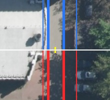
kr7 · (bez názvu) (krakow)
bez mapy: plocha 1* · obsluzna 3.1* · plocha 2.6*
s mapou Krakova: chodnik 1.05 · obsluzna 3.05 · chodnik 2.6*
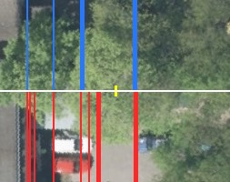
kr9 · (bez názvu) (krakow)
bez mapy: zelen 2.87* · stromorad 3.08* · obsluzna 5.8*
s mapou Krakova: zelen 0.35* · chodnik 0.45 · zelen 2.07* · stromorad 3* · zelen 0.88* · chodnik 1 · obsluzna 4.1
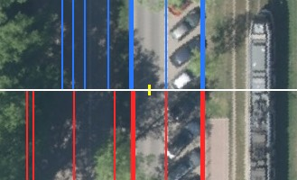
kr10 · Aleja 3 Maja (krakow)
bez mapy: cyklostezka 1.23* · cyklostezka 1.25* · plocha 2.65* · stromorad 2.5* · pruh 3.87 · parkovani 3.98
s mapou Krakova: nezname 0.7* · chodnik 4.5 · cyklostezka 4.5 · stromorad 2.05* · pruh 3.67 · parkovani 3.98
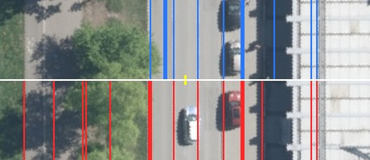
kr11 · Aleja Marszałka Ferdinanda Focha (krakow)
bez mapy: chodnik 1.75* · krajnice 1.17 · pruh 3 · pruh 3.13 · parkovani 2.3 · chodnik 4* · plocha 4.65* · nezname 0.7*
s mapou Krakova: chodnik 3.65 · cyklostezka 3.65 · nezname 0.35* · stromorad 3* · zelen 4.95* · pruh 3.02 · pruh 3 · bus 3.13 · parkovani 2.3 · chodnik 2.55 · plocha 6.1 · nezname 0.7*
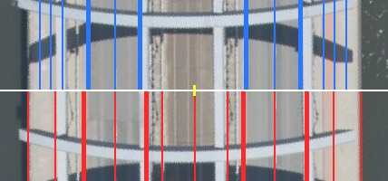
kr12 · Most Kotlarski (krakow)
bez mapy: cyklostezka 1.25* · cyklostezka 1.25* · voda 2.8* · pruh 3.07 · pruh 2.63 · voda 11.7* · pruh 3.27 · pruh 2.73 · voda 2.6* · cyklostezka 1.25* · cyklostezka 1.25*
s mapou Krakova: chodnik 3.03 · cyklostezka 3.03 · pruh 3.58 · pruh 3.38 · delici 1.8 · tramvaj 3.57 · tramvaj 3.57 · delici 1.7 · pruh 3.58 · pruh 3.48 · cyklostezka 2.98 · chodnik 2.98
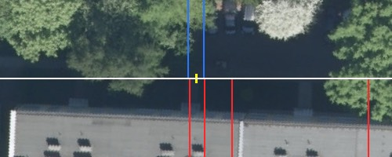
kr13 · (bez názvu) (krakow)
bez mapy: chodnik 2*
s mapou Krakova: chodnik 1.9 · nezname 3.45* · chodnik 17.43
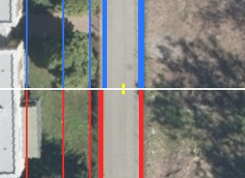
kr14 · Lucjana Siemieńskiego (krakow)
bez mapy: zelen 4.09* · stromorad 3* · zelen 1.56* · obsluzna 4* · plocha 0.45*
s mapou Krakova: zelen 4.09* · stromorad 3* · zelen 1.21* · obsluzna 4.5
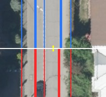
kr15 · Stefana Garczyńskiego (krakow)
bez mapy: chodnik 2.84* · parkovani 1.92 · pruh 3.38 · chodnik 2.08*
s mapou Krakova: chodnik 2.84 · parkovani 1.92 · pruh 2.98 · chodnik 2.48
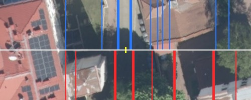
kr16 · (bez názvu) (krakow)
bez mapy: zelen 7.2* · plocha 3.2* · obsluzna 2.5* · plocha 4* · zelen 1.4* · plocha 1* · zelen 1.4* · plocha 9.2* · zelen 2.6*
s mapou Krakova: plocha 2* · chodnik 7.85 · obsluzna 3.55 · chodnik 3.8 · zelen 4.4* · obsluzna 7.8 · plocha 4.52*
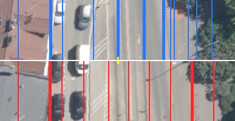
kr17 · Grzegórzecka (krakow)
bez mapy: chodnik 5.25* · parkovani 2 · krajnice 5.15* · pruh 4 · tramvaj 4.25* · pruh 3.2 · plocha 1.2* · chodnik 0.65* · cyklostezka 2.3* · plocha 1.35* · chodnik 2.5*
s mapou Krakova: chodnik 5.25 · parkovani 2 · pruh 3.58 · pruh 4.1 · tramvaj_pruh 3.3 · tramvaj_pruh 3.38 · pruh 3.5 · pruh 3.5 · plocha 3.6
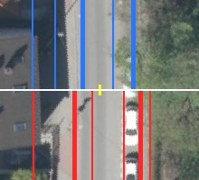
kr18 · Królowej Jadwigi (krakow)
bez mapy: zelen 2.45* · chodnik 3* · pruh 3.4 · parkovani 2.2*
s mapou Krakova: chodnik 4.5 · parkovani 2* · pruh 3.42 · parkovani 1.83* · chodnik 1.1
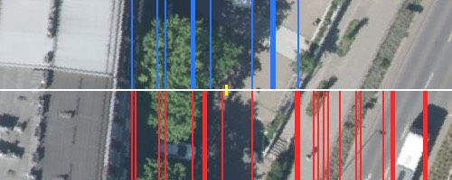
kr19 · Aleksandra Lubomirskiego (krakow)
bez mapy: chodnik 2.85* · zelen 0.85* · stromorad 3* · parkovani 2 · pruh 4.58 · tramvaj_v_pruhu 2.22 · zelen 0.35* · nezname 2.61*
s mapou Krakova: zelen 0.45* · chodnik 2.55 · zelen 0.73* · stromorad 3* · zelen 1.32* · parkovani 2 · pruh 3.23 · tramvaj_v_pruhu 4.97 · nezname 0.3* · chodnik 1.6 · nezname 0.45* · zelen 0.65* · nezname 0.45* · chodnik 1.37 · stromorad 1.73 · nezname 0.5* · zelen 2.55* · chodnik 0.95 · pruh 3.63
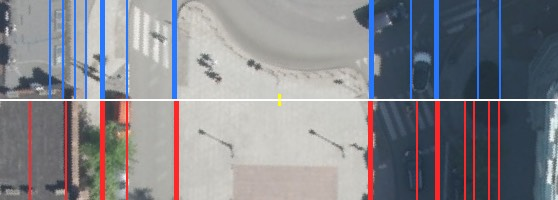
kr24 · Plac Jana Matejki (krakow)
bez mapy: cyklostezka 1.25* · cyklostezka 1.25* · chodnik 1.14* · stromorad 1.56 · parkovani 2.45 · pruh 4.7 · plocha 19.7* · pruh 4.07 · parkovani 2.43* · chodnik 4.2* · stromorad 2.2*
s mapou Krakova: chodnik 3.6 · cyklostezka 3.6 · parkovani 2.45 · pruh 4.9 · chodnik 19.45 · pruh 4.7 · parkovani 2* · chodnik 2.75 · plocha 0.94* · stromorad 1.5 · plocha 0.96*
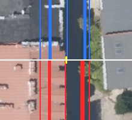
kr26 · Zamkowa (krakow)
bez mapy: chodnik 1.6* · pruh 2.9 · pruh 2.9 · zelen 0.83*
s mapou Krakova: chodnik 1.5 · pruh 2.72 · pruh 2.72 · chodnik 0.35 · zelen 0.93*
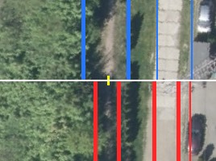
kr27 · (bez názvu) (krakow)
bez mapy: obsluzna 5.6* · zelen 3.6* · plocha 4.3*
s mapou Krakova: obsluzna 2.9 · zelen 4.4* · pruh 3 · chodnik 1.55*
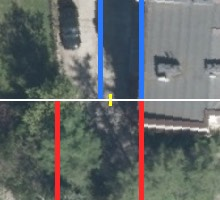
kr28 · (bez názvu) (krakow)
bez mapy: obsluzna 4.1*
s mapou Krakova: obsluzna 8.4
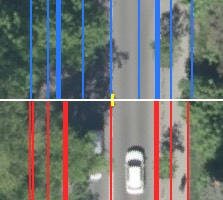
kr31 · Wrocławska (krakow)
bez mapy: chodnik 1.74* · stromorad 1.01 · parkovani 2.4* · pruh 2.8 · pruh 2.8 · krajnice 1.8* · stromorad 1.41 · chodnik 2.14*
s mapou Krakova: nezname 0.3* · chodnik 1.54 · stromorad 1.66 · pruh 4.62 · pruh 4.48 · stromorad 1.46 · chodnik 1.74
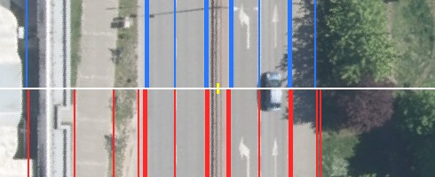
kr32 · Podgórska (krakow)
bez mapy: plocha 13.45* · pruh 3.27 · pruh 3.43 · delici 2.8* · pruh 3.27 · pruh 3.33 · chodnik 2.9*
s mapou Krakova: plocha 5.15* · chodnik 4.45 · plocha 2.8* · chodnik 0.65 · pruh 3.47 · pruh 3.53 · delici 2.45 · pruh 3.52 · pruh 3.48 · chodnik 3 · nezname 0.4*
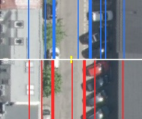
kr33 · Henryka Siemiradzkiego (krakow)
bez mapy: chodnik 2.75* · stromorad 1.4* · pruh 4.15 · parkovani 2* · chodnik 1.75* · plocha 0.85* · chodnik 3.05*
s mapou Krakova: chodnik 2.06 · stromorad 1.79 · pruh 3.3 · parkovani 2* · plocha 1.8 · chodnik 4.7
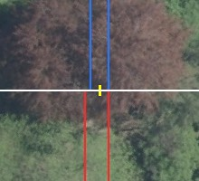
kr34 · (bez názvu) (krakow)
bez mapy: chodnik 2*
s mapou Krakova: chodnik 2.65
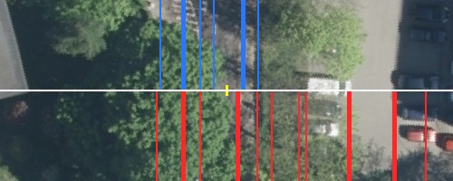
kr36 · Wójtowska (krakow)
bez mapy: chodnik 2.5* · parkovani 1.95 · cyklopruh 1.52 · pruh 3.13 · chodnik 1.75*
s mapou Krakova: chodnik 2.9 · parkovani 1.95 · pruh 4.1 · chodnik 2.2 · zelen 1.63* · stromorad 3* · zelen 0.77* · plocha 4.7 · obsluzna 5 · plocha 3.48